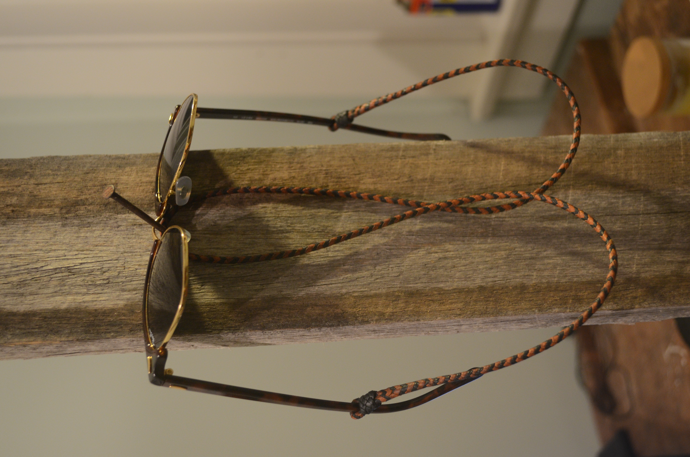
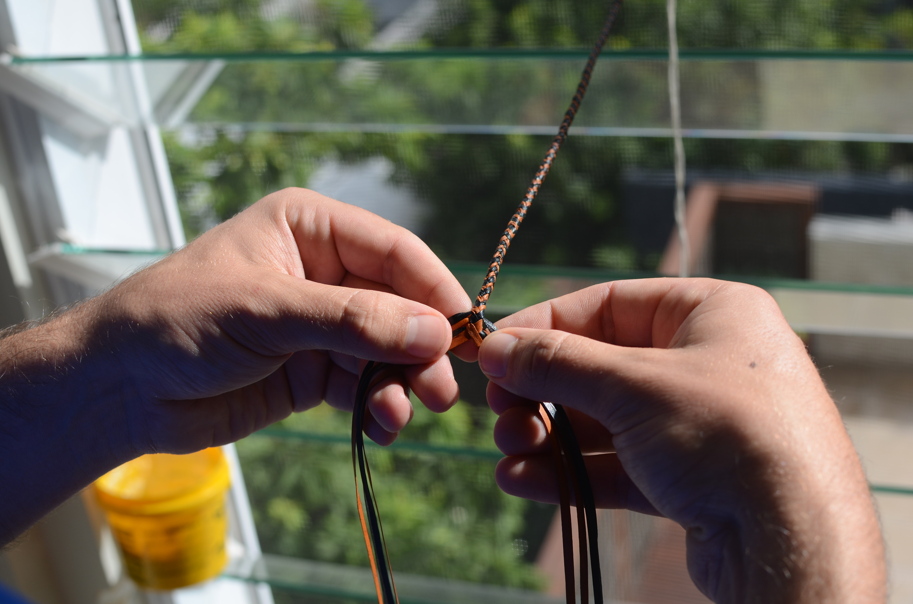

Photos (1) Plaited Lanyard



About
Lanyards are a practical accessory that I have been making for over two years now at Laidley Leather. I make two kinds, the first which is a finely plaited 8 plait laynard, and the second which is a simple single strand lanyard. Both of these lanyards are made like all my products with 100% Australian tanned kangaroo leather.
Prices
Prices are $80 for a plaited lanyard, and $15 for a simple lanyard. The reason that plaited lanyards are much more expensive is because is takes me approximately 3 hours to cut the leather and plait the lanyard.
Photos (1) Plaited Lanyard